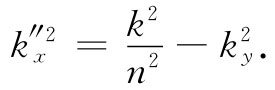
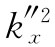
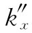

如果光从像玻璃那样具有实数折射率n大于1的材料向折射率等于1的空气传播，则由斯涅耳定律
sinθt =nsinθi .
可知，当入射角等于由下式所给出的“临界角”θc
nsinθc =1 （33.59）
时，该透射波的角θt 会变成90°。对大于这临界角的θi 又会发生什么情况呢？你知道将会有全内反射，但那是怎么产生的呢？
让我们回到式（33.45）上去，它给出透射波的波数k″。我们应有

这里ky =ksinθi ，而k=ωn/c，因而
如果nsinθi 大于1，则 就是负 的，因而 是个纯虚数，比方说±ikI 。至此你已明白那意味着什么了！该透射波（式33.34）将有这种形式：
波幅会随x的增大而按指数式地增加或减少。很清楚，这里所要的是那个负号。这样在界面右边的波幅 就将如图33-9中所示的那样递减。注意kI 为ω/c，它具有1/λ0 的数量级，其中λ0 为光在自由空间中的波长。当光从玻璃—空气界面上发生全内反射时，在空气里仍会有场，但只延伸到光波长的数量级那么一段距离。
图33-9 全内反射
现在我们可以知道如何来回答下述问题：如果玻璃中的光波以一足够大的角度到达表面，则它会被反射回来，如果把另一块玻璃移到该表面上去（以致“表面”实际上是消失了），则此时光将透射过去。试问这恰好是在什么时候发生的呢？肯定地说，必然存在从全反射变成无反射的连续变化过程。答案当然是：如果该空气间隙如此之小，以致波在空气中的指数曲线的尾部在那第二块玻璃中还有相当大的强度，则它仍将会在那里振动着电子而产生一个新的波，如图33-10所示。某些光将透射过去（显然，我们的解是不完全的，本来应该就两层玻璃间一薄层空气的情况再对所有的方程求解）。
图33-10 如果有一个小间隙，则内反射就不完全，在该间隙之外会出现一个透射波
这种透射效应可以用普通光观察到，只要空气间隙十分微小（属于光波波长的数量级，诸如10-5 cm），但如果采用三厘米波，则不难演示出来。这时按指数函数衰减的场就会伸展几个厘米。一种能表现这一效应的微波装置如图33-11所示。从三厘米波的小发送机发出波对准一个45°角的石蜡棱镜。对于这种频率石蜡的折射率为1.50，因而临界角为41.5°。所以波全部从那个45°的面上反射而由探测器A采集，如图33-11（a）所示。如果将第二个石蜡棱镜与该第一个棱镜互相接触地放在一起，如图33-11（b）中所示，则波将笔直地贯穿过去而在探测器B那里被接收。如果在两个棱镜之间留下几厘米厚的空隙，如图33-11（c）所示那样，则透射波与反射波两者都同时并存。在图33-11（a）中存在于该棱镜的45°面之外的电场，也可以通过把探测器B移至离该表面几厘米内而加以鉴定。
图33-11 对内反射波的贯穿程度的演示